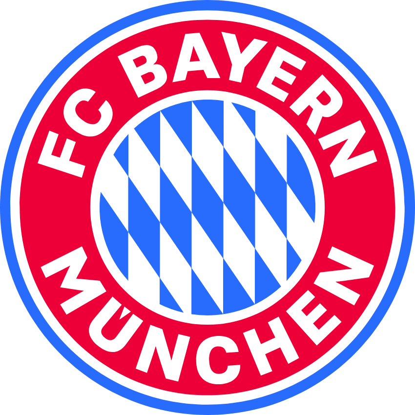
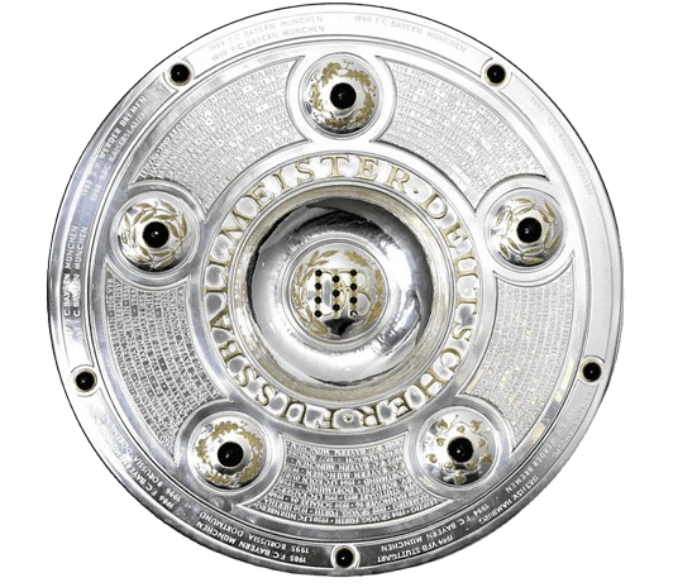
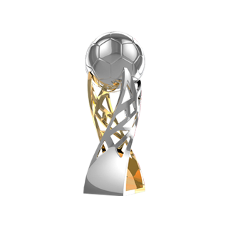
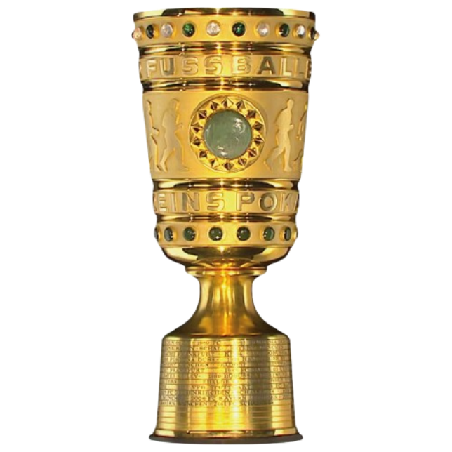

Jogos
117

Uma fase de aceleração técnica, assistência em alto nível e repertório decisivo em jogos grandes.
| Competição | Jogos | Gols | Assistências |
|---|---|---|---|
| Bundesliga | 74 | 36 | 65 |
| DFB-Pokal | 6 | 4 | 4 |
| Supercopa da Alemanha | 2 | 3 | 1 |
| Champions League | 28 | 11 | 16 |
| SuperMundial | 7 | 4 | 8 |
| Total | 117 | 58 | 94 |


